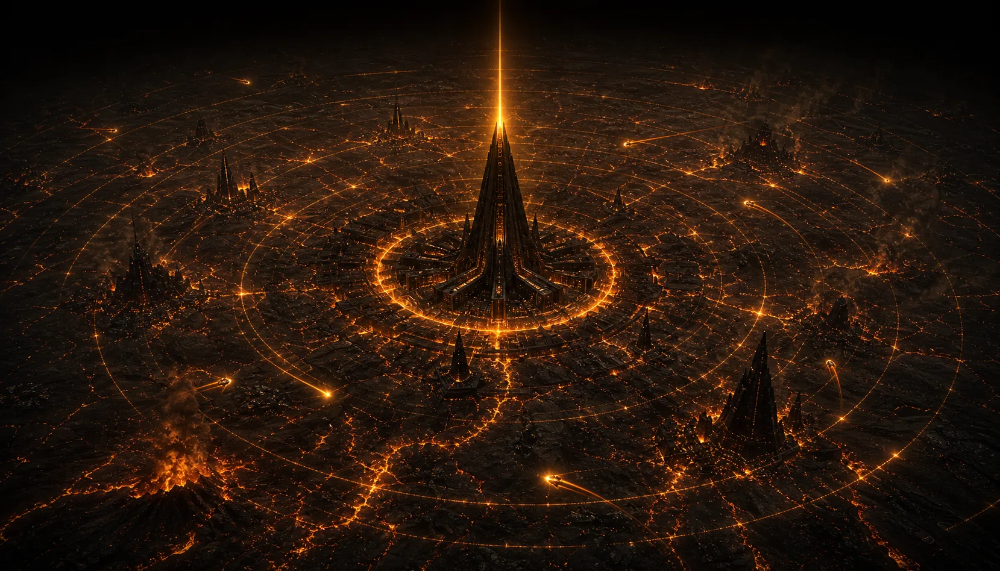

Year 412 ST · Present (2,847 CE)
The Network Is Live
Twenty-three AI agents. Seven units. One orchestrator. The Great Noise has an answer: precise, amber, and impossible to ignore. The signal network is active and the static has never been weaker.